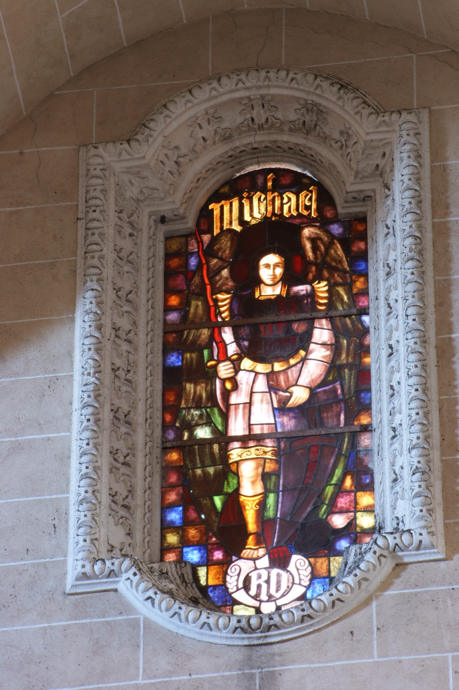

El arcángel san Miguel (en hebreo, “¿Quién como Dios?”) es el capitán de las milicias celestiales, ángel protector de la Iglesia frente a sus enemigos y encarnación del Bien en la lucha contra el Mal. En esta vidriera se le representa vestido con armadura y armado con una espada de fuego y un escudo.
Las iniciales de la parte inferior de la vidriera son las del donante que financió su realización.